The Porsche 911 was first unveiled to the public on 12 September 1963 when it was launched at the Frankfurt International Motor Show. Full production of the car began a year later in September 1964 at the Porsche factory in Zuffenhausen.
The 2022 Porsche 911 Turbo and Turbo S is powered by a 3.7-liter twin-turbocharged flat-six engine that generates up to 640 horsepower in powerful variants and 572 horsepower in the regular Turbo model. All-wheel drive is standard, and the shifts are taken care of by an eight-speed dual-clutch automatic transmission.
Button is working
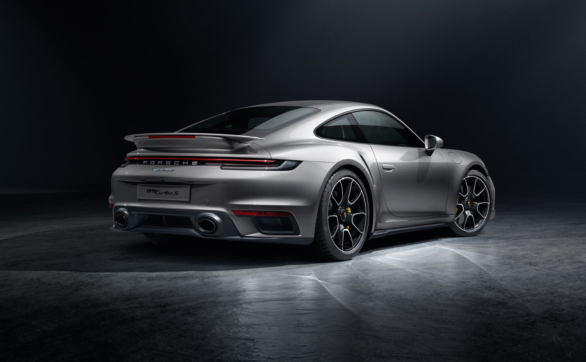 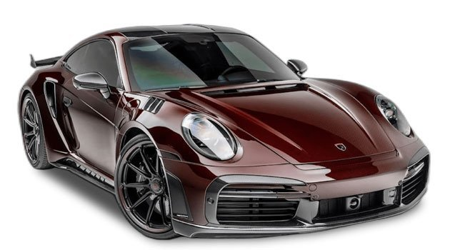 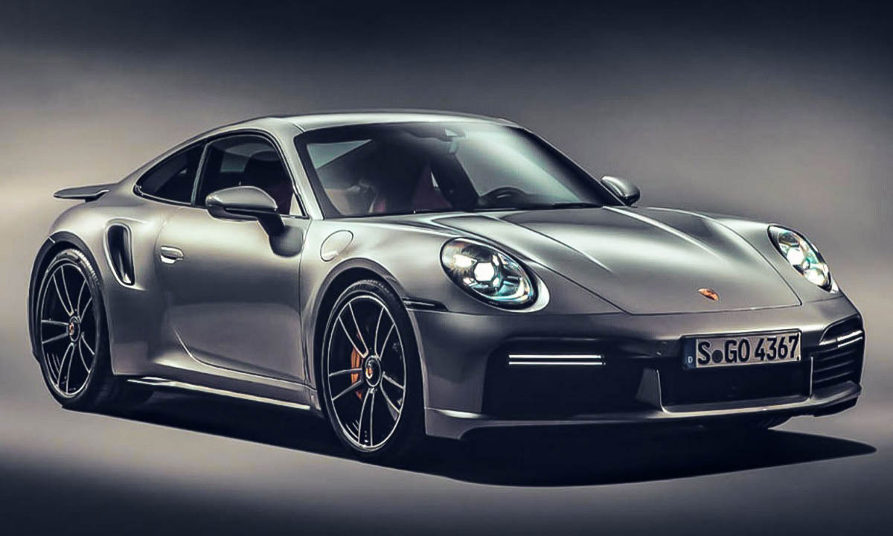Who designed the Porsche 911?
The first ever Porsche 911 was designed by F.A. Porsche – son of the founder of the company, Ferry Porsche – and his team. The original 911 had an air-cooled flat-six engine instead of the four-cylinder boxer engine of the 356. It developed 130PS, could accelerate from 0-100km/h in 9.1 seconds and had a top speed of 210km/h. These were hugely impressive figures for a production sportscar at the time. Although there have been many versions of the 911 since then, much has remained the same, like its 2 + 2 seating layout and rear engine position.
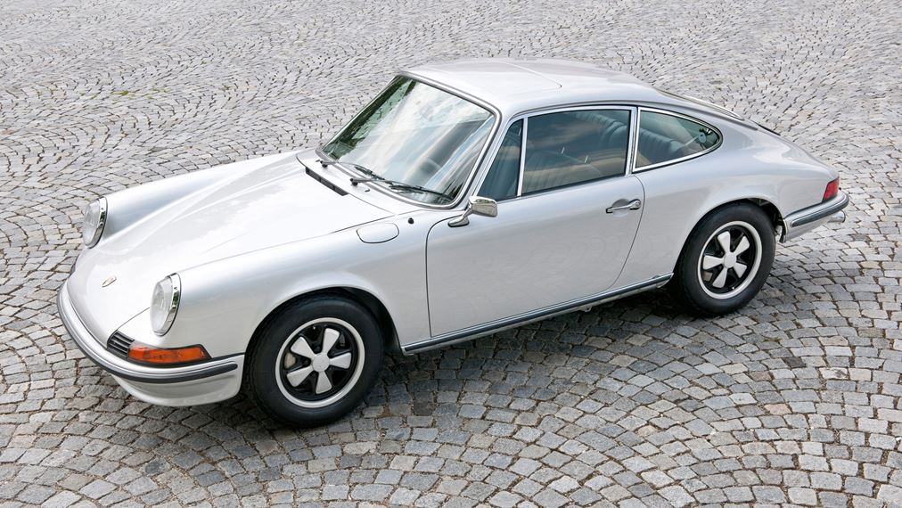Many great Porsche designers have been involved in updating and evolving the 911 over the decades. They include such legendary figures as Anatole Lapine, who designed the G series, the successor to the original 911, and Harm Lagaay. This Dutchman was chief designer at Porsche from 1989 to 2004 and was the man who, among many other highlights, introduced the much talked about ‘fried egg’ headlights on the 911 (type 996). And, since 2004, it's been Michael Mauer who has overseen design of the 911 in his role as Head of Style Porsche.
These days you can choose a Porsche 911 to fit a wide range of lifestyles, like the new 911 Dakar, the first standard off-road model in the series, or the fastest production car in the current 911 line-up, the 911 Turbo S. Or, as Ferry Porsche once famously said, “The 911 is the only car that you can drive from an African safari to Le Mans, then to the theatre and onto the streets of New York.”
HomeHow many versions of the Porsche 911 have there been?
- Original 911 (1963-1973) 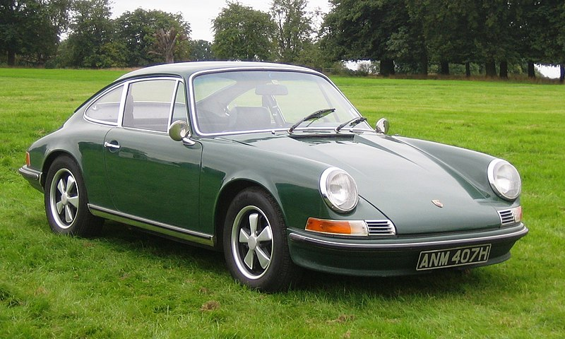
- G series (1974-1989) 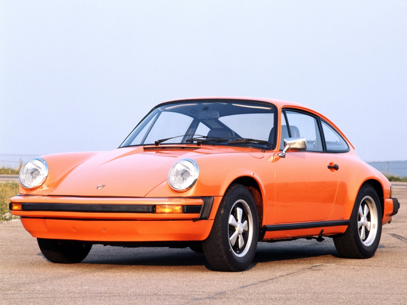
- 964 (1988-1994) 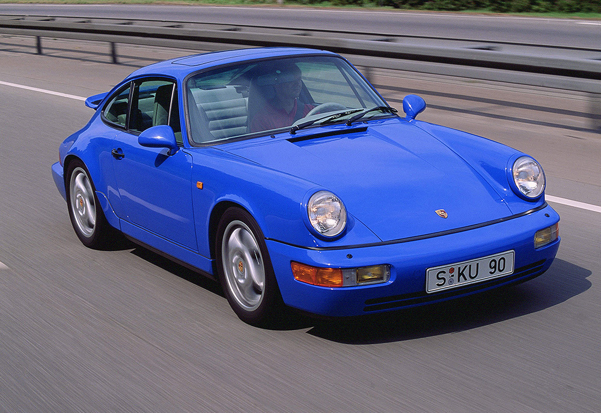
- 993 (1993-1998) 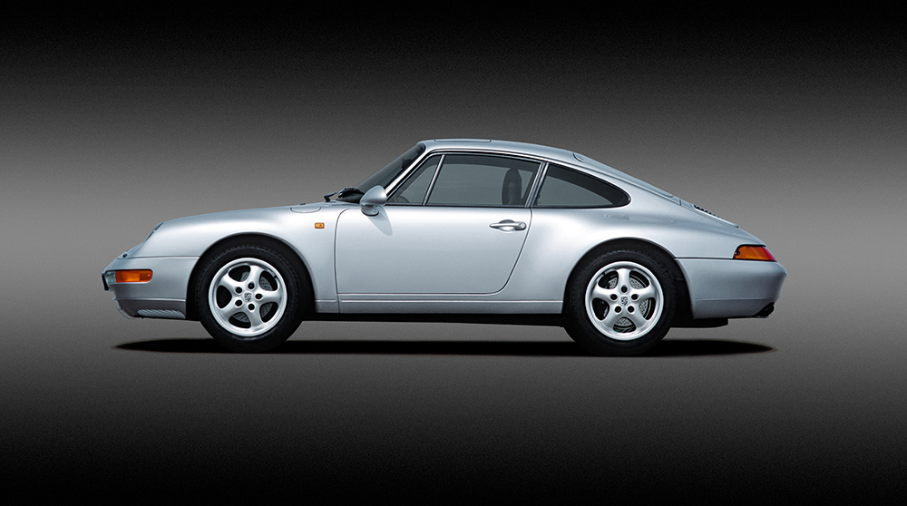
- 996 (1997-2005) 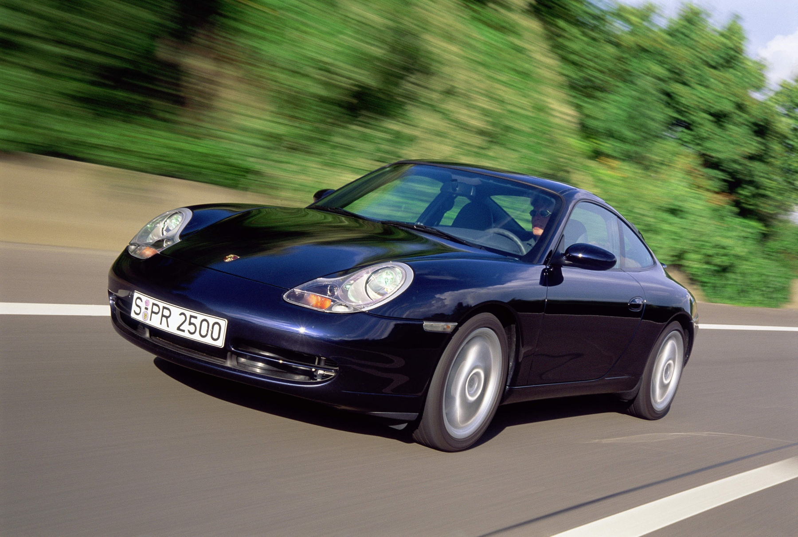
- 997 (2004-2012) 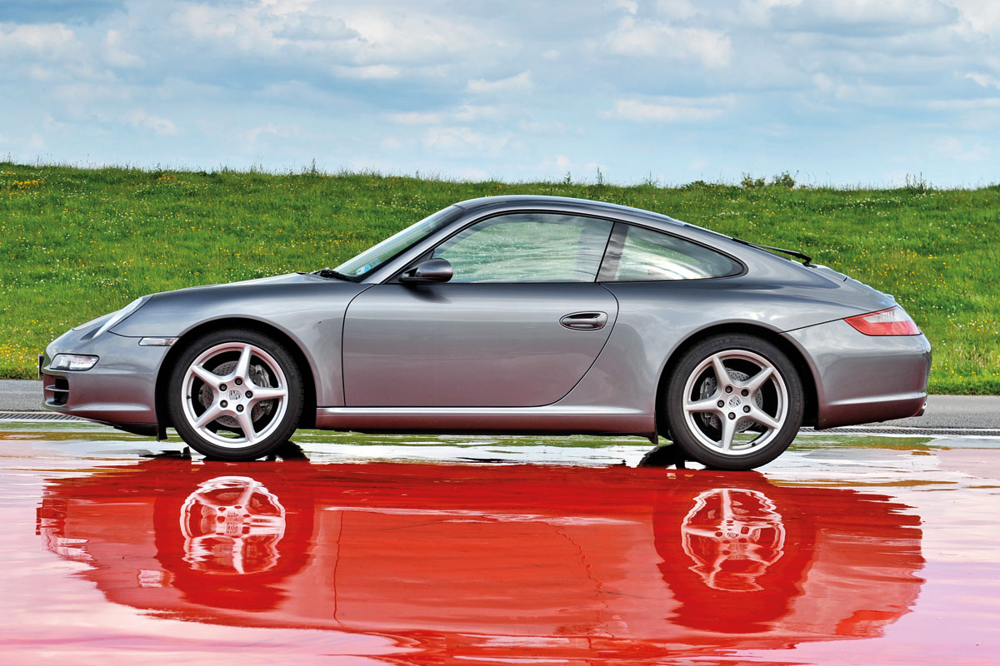
- 991 (2011-2019) 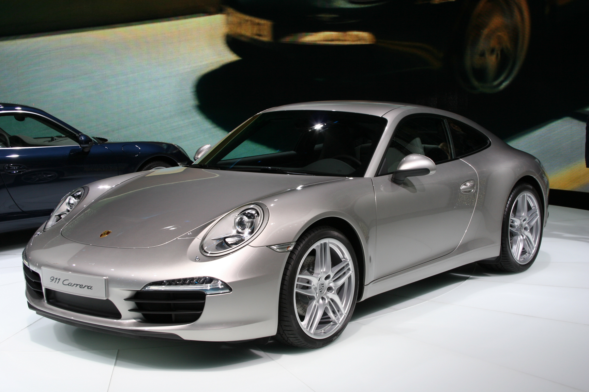
- 992 (2018-present) 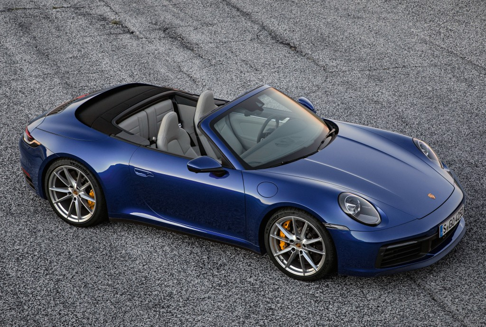
Which is the fastest Porsche 911 ever?
The fastest production Porsche 911 ever made is the 2023 911 Turbo S (type 992). With its 650PS, 3.7-litre engine, it can hit the 100km/h mark from a standstill in just 2.7 seconds with the PDK gearbox and Sport Chrono Package and reach a top speed of 330km/h.
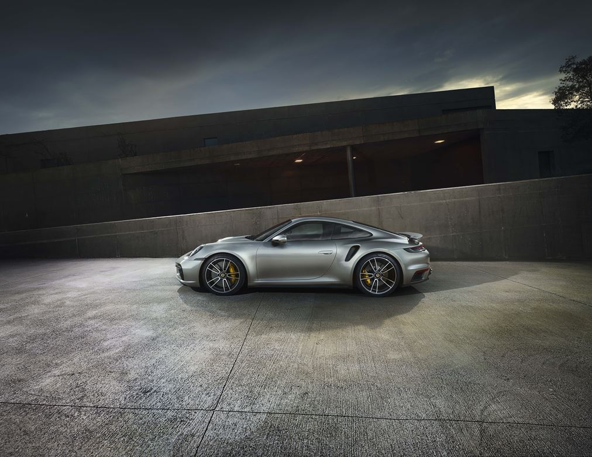Where is the Porsche 911 built?
The Porsche 911 is only built at Zuffenhausen, Germany, the headquarters of Dr. Ing. h.c. F. Porsche AG. It’s exactly the same factory complex, in fact, where the first-ever 911 rolled off the line back when full-scale production began in 1964, a year after its Frankfurt International Motor Show launch. Every new 911 that has ever been built since has been made at Zuffenhausen.
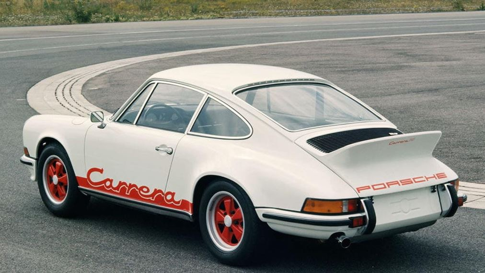Who are famous Porsche 911 owners?
Many of the biggest names in music, sport, film and television have owned a Porsche 911. Famous people to own a Porsche 911 include rapper Eminem, model Kendall Jenner, footballer David Beckham, fashion designer Ralph Lauren, pop star Harry Styles and actor, racing driver and Porsche brand ambassador, Patrick Dempsey. 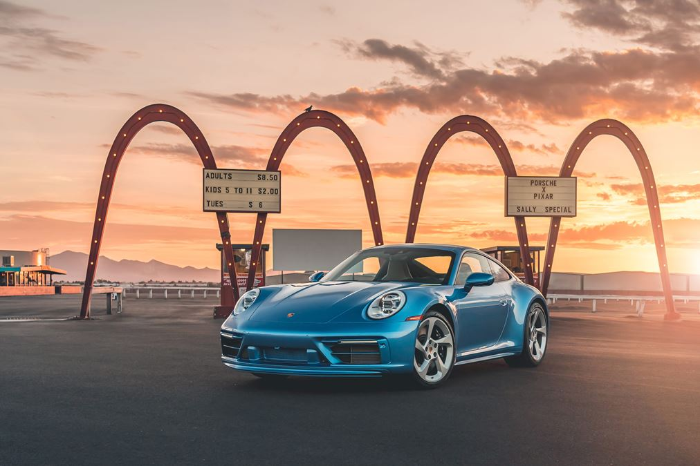
One of the most famous personal Porsche collections belongs to comedian and actor Jerry Seinfeld, who owns one of the biggest and most impressive Porsche line-ups – including several 911 sportscars – in the world. He admits that the day he first bought a 911 (20 January 1988) will be etched on his memory for life. Oh, he bought a black 911 Carrera, by the way.